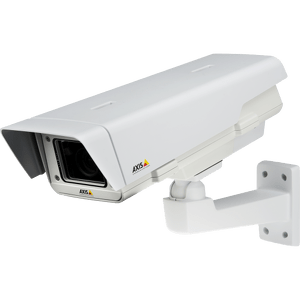

This page explains how Surrey Police can request CCTV footage from the UK Safety Camera Network Ltd

Surrey Police officers may request CCTV footage for legitimate policing purposes. All requests are subject to verification and review.
CCTV footage is not automatically shared with Surrey police. Each request is assessed individually in accordance with applicable law.
USCN operates independently of the Surrey Police Service. This page does not indicate any official partnership or affiliation.
Footage availability depends on camera coverage, recording periods and applicable retention arrangements.
1.
Police Constable
police-constable.request@surrey.uscn.org.uk
Police Sergeant
police-sergeant.request@surrey.uscn.org.uk
Detective Constable
detective-constable.request@surrey.uscn.org.uk
Detective Sergeant
detective-sergeant.request@surrey.uscn.org.uk
Detective Inspector
detective-inspector.request@surrey.uscn.org.uk
Police Community Support Officer (PCSO)
pcso.request@surrey.uscn.org.uk
Collision Investigator
collision-investigator.request@surrey.uscn.org.uk
Digital Forensics
digital-forensics.request@surrey.uscn.org.uk
Police Staff Investigator
staff-investigator.request@surrey.uscn.org.uk
CCTV / Video Evidence Officer
video-evidence.request@surrey.uscn.org.uk
Tel: 0330 520 4085
Data Handling - Data Protection
2.
For enquires regarding camera hardware we operate (including logs) contact:
Software Logs
surrey-police.software-logs@ware.uscn.org.uk
Camera Locations, Manufactures
surrey-police.hardware@ware.uscn.org.uk
General Information in relation to hard/software
hws631446@ware.uscn.org.uk
(HSW-General-Mailbox, Surrey-Police)
Tel: 0330 520 4085
(surrey-police.dpo@ware.uscn.org.uk may need to involved when disclosing certain information)
HSW - Hard/Soft Ware.